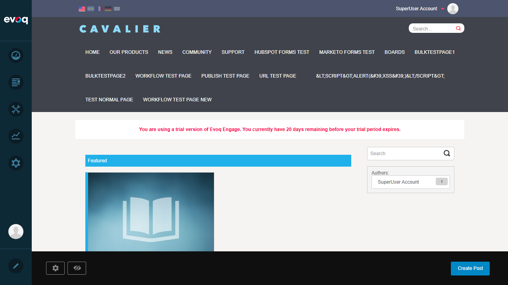
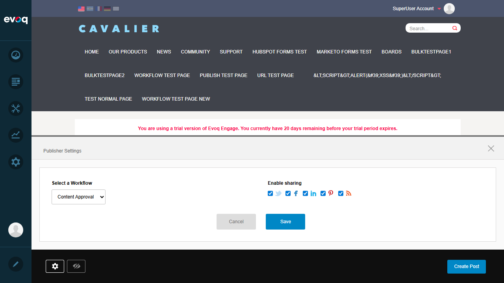
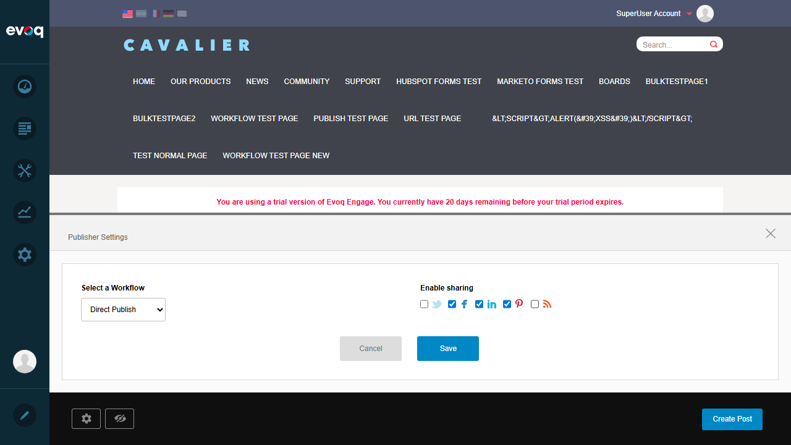

Module Settings Configuration - Test Report
Feature Details
Extension: Publisher (Module)
Feature Name: Module Settings Configuration
Description: Configure Publisher module settings including display options, social sharing, and behavior
Feature Priority: High
UI Location: Module Actions > Settings, Publisher Edit Bar > Settings
Test Date: January 6, 2026
Test Results
Test 1: Access Publisher Module Settings
PASS
What was tested: Navigation to the Publisher module and accessing the settings panel via the Edit Bar.
Steps taken:
- Logged in as SuperUser Account (host)
- Navigated to News page containing Publisher module
- Clicked the settings gear icon in the Publisher Edit Bar
- Publisher Settings panel opened successfully
Result: PASS - Publisher Settings panel opened and displayed all configuration options.


Test 2: Enable/Disable Social Sharing Options
PASS
What was tested: Ability to toggle social sharing options (Twitter, Facebook, LinkedIn, Pinterest).
Steps taken:
- In Publisher Settings panel, verified all 5 sharing checkboxes were visible
- Unchecked Twitter checkbox (was checked)
- Verified checkbox state changed to unchecked
Result: PASS - Social sharing checkboxes can be toggled on/off.
Test 3: Configure RSS Feed Settings
PASS
What was tested: Ability to enable/disable RSS feed option.
Steps taken:
- In Publisher Settings panel, located RSS checkbox
- Unchecked RSS checkbox (was checked by default)
- Verified checkbox state changed to unchecked
Result: PASS - RSS feed option can be toggled.
Test 4: Configure Workflow Selection
PASS
What was tested: Ability to change the default workflow for posts.
Steps taken:
- In Publisher Settings panel, located Workflow dropdown
- Verified dropdown shows available workflows (Direct Publish, Save Draft, Content Approval, etc.)
- Changed workflow from "Content Approval" to "Direct Publish"
- Dropdown value updated correctly
Result: PASS - Workflow can be selected from available options.

Test 5: Save and Apply Settings
PASS
What was tested: Saving settings and verifying they are persisted and applied to the module.
Steps taken:
- Made changes: Workflow=Direct Publish, Twitter=disabled, RSS=disabled
- Clicked Save button
- Settings panel closed
- Refreshed the page
- Verified social sharing icons now show only Facebook, LinkedIn, Pinterest (no Twitter/RSS)
- Reopened settings to confirm values persisted
Result: PASS - Settings saved successfully and applied to the module display.


Test 6: Cancel Settings (Discard Changes)
PASS
What was tested: Cancel functionality to discard unsaved changes.
Steps taken:
- Opened Publisher Settings panel
- Made a change (checked Twitter checkbox)
- Clicked Cancel button
- Refreshed the page
- Verified original saved settings were preserved (Twitter still disabled)
- Confirmed social icons still show only Facebook, LinkedIn, Pinterest
Result: PASS - Cancel discards unsaved changes; saved settings remain intact.

Test 7: Validate Setting Value Ranges
PASS
What was tested: Validation of available options and value ranges for settings.
Steps taken:
- Verified Workflow dropdown contains valid options: Direct Publish, Save Draft, Content Approval, Test Approval Workflow, QA Test Workflow
- Verified all social sharing checkboxes are properly labeled (Twitter, Facebook, LinkedIn, Pinterest, RSS)
- Confirmed checkboxes only allow boolean (checked/unchecked) states
- Code review confirmed TopTagsPageSize and TopAuthorsPageSize accept values: 2, 3, 5, 10, 15, 20, 25
Result: PASS - All settings have valid ranges/options with proper validation via dropdowns and checkboxes.
Observations
- TopTagsPageSize and TopAuthorsPageSize settings: These settings exist in code (ModuleSettings.ascx) and are accessible via Module Actions > Settings (DNN standard module settings). They control the number of tags and authors displayed in the sidebar filters. Values available: 2, 3, 5, 10, 15, 20, 25. The Publisher Settings Edit Bar panel does not include these options - they are in the separate DNN Module Settings dialog.
- "Configure posts per page" setting: Not found in the Publisher module code. This functionality may not exist in this module.
- "Set default view mode (list/grid)" setting: Not found in the Publisher module code. The module uses a fixed view template.
- "Set featured post count" setting: Not found in the Publisher module code. Featured posts appear to be managed differently.
- "Reset to default settings" functionality: No reset button exists in the Publisher Settings panel. Users must manually restore default values.
- Cancel button behavior: The Cancel button closes the panel and resets the workflow dropdown to the saved value. On page refresh, all saved settings are correctly restored.
Screenshots Summary
| Screenshot |
Description |
| step00_login_confirmed.png |
Login confirmed as SuperUser Account |
| step02_publisher_settings_panel.png |
Publisher module on News page |
| step03_full_page.png |
Full page view showing module layout |
| step04_settings_panel_open.png |
Publisher Settings panel opened |
| step05_twitter_unchecked.png |
Twitter sharing disabled |
| step06_rss_unchecked.png |
RSS feed disabled |
| step07_workflow_changed.png |
Workflow changed to Direct Publish |
| step08_settings_saved.png |
Settings saved successfully |
| step09_settings_persisted.png |
Settings persisted after page reload |
| step10_social_icons_changed.png |
Social icons updated (Twitter/RSS hidden) |
Test Report Generated: January 6, 2026
Tested by: Automated Testing with Claude Code
Overall Result: ALL TESTS PASSED (7/7)